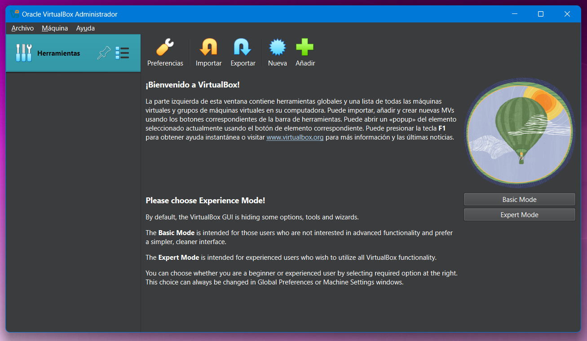
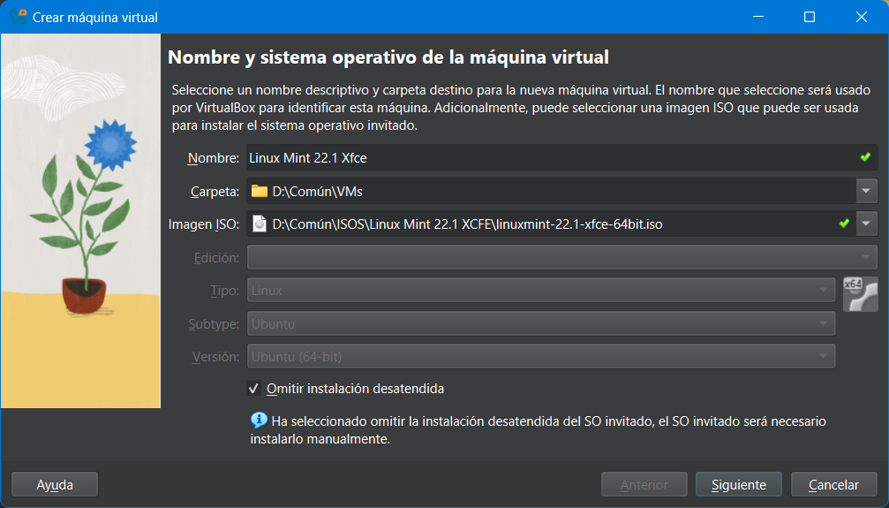
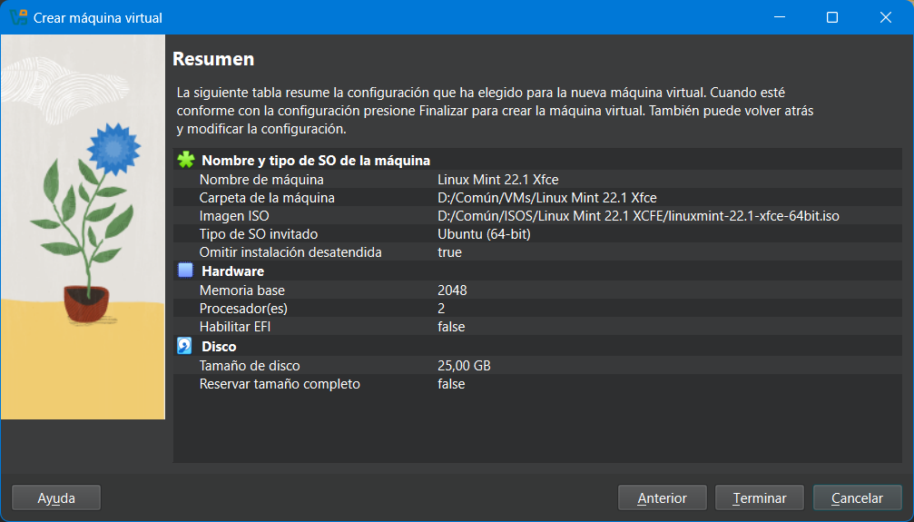

üíäVirtualizaci√≥n1. Introducci√≥n1.1. ¬øQu√© es la virtualizaci√≥n?1.2. ¬øPara qu√© sirve en seguridad inform√°tica?1.3. Herramienta que usaremos: VirtualBox1.4. Requisitos m√≠nimos del equipo1.5. Distribuciones Linux recomendadas1.6. Instalaci√≥n de VirtualBox1.7. Primeros pasos en VirtualBoxAjustes recomendados (una sola vez)2. Preparar una m√°quina virtual con Linux2.1. Descargar la ISO de Linux Mint XFCE2.2. Crear la m√°quina virtual2.3. Hardware de la VM2.4. Crear el disco duro virtual2.5. Resumen2.6. (opcional) Configurar la ISO como disco de arranque3. Instalar Linux Mint XFCE en la m√°quina virtual3.1. Iniciar la m√°quina virtual por primera vez3.2. Entrar en el escritorio Live3.3. Instalaci√≥n paso a paso de Linux3.4. Primer arranque y comprobaciones iniciales4. Puesta a punto del sistema4.1. Cambiar la resoluci√≥n de pantalla4.2. Instalar Complementos de invitado (Guest Additions)4.3. Activar portapapeles compartido y arrastrar/soltar4.4. Actualizar el sistema4.5. Apagar el sistemaM√°quina lista para trabajar
Tip
Este tema extra no forma parte del índice oficial, pero es clave para que podamos practicar con sistemas operativos reales sin riesgo. ¡Vamos a montar nuestro laboratorio virtual!
La virtualización consiste en ejecutar sistemas operativos dentro de una máquina virtual (VM), como si fueran aplicaciones más. Es como tener un segundo ordenador dentro del tuyo.
Note
Puedes tener Linux funcionando dentro de Windows (o viceversa) sin necesidad de hacer particiones ni borrar nada.
Para hacer pr√°cticas sin riesgo.
Para simular escenarios reales sin tocar tu sistema principal.
Para probar configuraciones, instalar software potencialmente peligroso o practicar con malware en entornos aislados.
Para montar laboratorios con varias máquinas comunicándose entre sí.
Important
En este curso vamos a usar m√°quinas virtuales para practicar herramientas de seguridad, usuarios, permisos, cifrado, redes, etc.
Vamos a trabajar con VirtualBox, un programa gratuito y de código abierto que permite crear y ejecutar máquinas virtuales de forma sencilla.
¿Por qué VirtualBox?
Es gratuito, multiplataforma y de código abierto.
Tiene buena documentación y soporte.
Permite usar snapshots (copias de estado).
Es f√°cil de usar incluso para principiantes.
Aunque depende de lo que vayamos a virtualizar, estos son los requisitos recomendados:
Al menos 8 GB de RAM (se puede con 4, pero con limitaciones).
30 GB libres en disco duro (mejor SSD).
Virtualización activada en la BIOS/UEFI.
Note
ü™ü C√≥mo comprobar si la virtualizaci√≥n est√° activada en Windows:
Pulsa Ctrl + Shift + Esc para abrir el Administrador de tareas.
Ve a la pestaña Rendimiento.
Haz clic en CPU (en la columna de la izquierda).
En la parte inferior derecha, verás un campo que dice "Virtualización".
Si pone "Habilitado", ya est√° todo listo. Si pone "Deshabilitado", deber√°s activarla desde la BIOS/UEFI (lo veremos si hace falta en clase).
Usaremos distribuciones ligeras y amigables:
Linux Mint XFCE
Xubuntu
Warning
¡No descargues todavía ninguna ISO!
Es posible que las ISOs se entreguen directamente en clase mediante pendrive para evitar saturar la red. Espera a que el profesor te indique cuándo y cómo hacerlo.
Ambas distribuciones son perfectas para iniciarse: ligeras, visualmente agradables y con buena compatibilidad en m√°quinas virtuales.
Note
ü§ìNo utilizaremos Kali Linux ni Ubuntu est√°ndar en este curso. Kali es una distribuci√≥n orientada al pentesting profesional, con muchas herramientas avanzadas que pueden resultar confusas para principiantes. Adem√°s, su interfaz y rendimiento pueden ser m√°s exigentes.
Ubuntu, aunque muy popular, utiliza un entorno de escritorio más pesado (GNOME), que no funciona tan fluido en máquinas virtuales con pocos recursos. Mint XFCE y Xubuntu ofrecen una experiencia mucho más fluida y accesible para el día a día.
ü™ü Windows:
Descargar el instalador para Windows.
Ejecutar como administrador.
Aceptar las opciones por defecto.
Finalizar y abrir VirtualBox.
Caution
Durante la instalación de VirtualBox (el archivo .exe), es recomendable ejecutarlo como administrador para evitar problemas con los controladores de red o USB.
Pero una vez instalado, NO debes abrir VirtualBox como administrador, ya que eso puede crear m√°quinas virtuales en un perfil distinto del tuyo, y luego no las ver√°s al abrirlo normalmente.
üêß Linux (Debian/Ubuntu y derivados):
1sudo apt update2sudo apt install virtualboxTip
Así se instalaría Virtual Box en cualquier distribución Linux. Obviamente no te hace falta puesto que lo tenemos en Windows. Pero para que te vayas acostumbrando a ver comandos en Linux .
Una vez instalado VirtualBox, ver√°s una interfaz dividida en dos partes principales:
Barra lateral izquierda: donde aparecer√°n las m√°quinas virtuales que vayas creando.
Panel derecho: muestra la información y configuración de la máquina seleccionada.
Men√∫ superior: con opciones para crear, modificar, clonar, exportar o iniciar m√°quinas virtuales.

Note
Aunque la interfaz es sencilla, es importante que antes de crear nada revises un par de ajustes globales.
Ve a Archivo ‚Üí Preferencias o pulsa Ctrl + G.
En la pestaña General, puedes cambiar el idioma si no está en español.
En Carpeta predeterminada de máquinas puedes elegir dónde se guardarán tus VMs (recomendado: una carpeta con espacio suficiente en tu disco).
Tip
No es necesario tocar m√°s opciones por ahora. Cuando creemos la m√°quina virtual, configuraremos los recursos (RAM, CPU, disco...) caso por caso.
Vamos a crear nuestra primera máquina virtual para instalar Linux Mint XFCE, una distribución ligera, sencilla y perfecta para empezar a trabajar en un entorno Linux sin complicaciones.
⚠️ ¡No te adelantes! ⚠️
Es fundamental que sigas los pasos exactamente en el orden en el que se van explicando en clase. Si haces algo antes de tiempo o cambias alguna opción sin saber, podrías romper la instalación, y eso te obligaría a borrar la máquina virtual y volver a empezar desde cero.
Esto puede llevar mucho tiempo perdido y retrasar a todo el grupo.
üîÅ Si algo no te funciona, ¬°para y pregunta antes de continuar!
Puedes obtener la ISO oficial desde esta p√°gina:
üîó https://www.linuxmint.com/download.php
Warning
¡No descargues nada todavía! Espera a que el profesor lo indique. Es posible que las ISOs se repartan por USB para no saturar la red del aula.
Abre VirtualBox y pulsa en el botón "Nueva" o usa el atajo Ctrl + N.
Escribe un nombre para la m√°quina, por ejemplo: MintXFCE.
Elige la carpeta de tu ordenador donde se guardar√° la m√°quina (por defecto ser√° donde elegiste en el punto 1.7)
En Imagen ISO selecciona el archivo ISO que hemos conseguido en el punto 2.1.
Detectará el SO y se deshabilitarán los desplegables de Edición, Tipo, Subtipo y Versión,
Dejamos marcada la opción de "Omitir instalación desatendida" para hacer nosotros el proceso de instalación.
Haz clic en Siguiente.

Tip
ü§ñ ¬øHas visto que pone "puede ser instalado de forma desatendida"?
VirtualBox puede detectar algunas ISOs y ofrecer una opción de instalación desatendida, que automatiza todo el proceso (usuario, idioma, disco, etc.).
Para este curso no vamos a usarla, porque lo que queremos es aprender a instalar Linux paso a paso.
Pero necesitas hacerlo rápido en casa o repetir el proceso, puedes probar esa opción para ahorrar tiempo. Solo asegúrate de recordar la contraseña que pongas, ¡porque no verás ninguna pantalla que te la pida!
Recomendado: 2048 MB (2 GB) o m√°s si tu equipo lo permite.
Procesadores: 2 CPU.
Note
üõ†Ô∏è ¬øY si me he quedado corto o me he pasado?
No te preocupes. Puedes cambiar tanto la memoria RAM como el n√∫mero de procesadores m√°s adelante, aunque ya hayas instalado el sistema operativo.
Solo asegúrate de que la máquina virtual esté apagada, ve a Configuración → Sistema, y ajusta lo que necesites desde las pestañas Placa base (RAM) y Procesador (CPU).
Warning
No asignes demasiados recursos o tu ordenador real o ir√° muy lento.
Selecciona "Crear un disco duro virtual ahora".
Deja desmarcada "Reservar tamaño completo".
Tamaño de disco: 25 GB.
Note
üíæ ¬øQu√© significa ‚ÄúReservar tama√±o completo‚Äù?
☑️Reservar tamaño completo: el archivo del disco virtual ocupará solo el espacio que necesite e irá creciendo hasta el tamaño máximo que indiques (por ejemplo, 25 GB). Es más flexible y ocupa menos al principio.
üî≤Reservar tama√±o completo: reserva todo el espacio desde el principio. Suele ser m√°s r√°pido en lectura/escritura, pero ocupa m√°s en tu disco real desde el primer momento.
üóÇÔ∏è ¬øY si ya tengo un disco virtual?
Puedes elegir la opción “usar un archivo de disco duro virtual existente” si ya tenías una máquina creada antes o si el profesor te ha dado un archivo .vdi listo para usar.

Observa el resumen para verificar que todo est√° correcto antes de darle a Terminar.
Important
Este punto es opcional y solo usarlo en caso de que la m√°quina no arraque.
Una vez creada la máquina, selecciónala y pulsa "Configuración".
Ve a la sección Almacenamiento.
Haz clic en el icono del disco vacío bajo "Controlador: IDE".
A la derecha, haz clic en el icono del disco y selecciona "Elegir un archivo de disco".
Busca la ISO de Linux Mint que hayas descargado (o la que te haya proporcionado el profesor).
Ya tenemos la máquina creada y lista para arrancar. Ahora vamos a iniciar el sistema desde la ISO, acceder al entorno Live de Linux Mint y proceder con la instalación completa dentro de la máquina virtual.
Tip
Este proceso es muy similar al de instalar un sistema operativo en un ordenador real. Es una de las mejores formas de aprender cómo funciona un sistema Linux desde cero.
Selecciona tu m√°quina en VirtualBox.
Pulsa en "Iniciar" (o haz doble clic sobre la m√°quina).
Aparecerá un menú de arranque. Elige la opción por defecto:
Start Linux Mint Xfce 64-bit (u otra versión similar según la ISO que uses).
Note
Este menú no es el instalador. Solo está cargando el sistema en modo Live, para que puedas probarlo sin instalar nada todavía.
Una vez arranque el entorno Live, ver√°s el escritorio de Linux Mint. Es un entorno funcional donde podr√°s abrir aplicaciones, terminales, configuraciones, navegar por internet, etc.
Note
El modo Live es muy útil para probar Linux sin hacer cambios en tu equipo. Pero en este curso, vamos a hacer la instalación completa para tener una VM funcional y persistente.
Tip
ü§ì ¬øQuieres comprobar que realmente est√°s usando Linux?
Abre el navegador dentro de la máquina virtual e introduce esta dirección:
üîó https://www.whatismybrowser.com
En la parte superior de la página verás el sistema operativo que estás utilizando. Si todo ha ido bien, debería decir algo como:
“Your web browser looks like: Chrome 135 on Windows 11”
“Your web browser looks like: Firefox 137 on Linux”
Es una forma r√°pida y visual de confirmar que tu entorno Linux est√° funcionando correctamente.
Desde el modo Live, hacemos clic en el icono de üíøInstall Linux Mint que tenemos en el escritorio.
Al iniciar el instalador, se abrir√° un asistente que te guiar√° por los distintos pasos para instalar el sistema en tu m√°quina virtual.
Paso 1: Seleccionar el idioma
Elige Español (u otro si prefieres).
Haz clic en Continuar.
Paso 2: Distribución del teclado
Se recomienda dejarlo como Español - Español (o "Spanish - Spanish").
Paso 3: Instalar software de terceros
Marca “Instalar los códecs multimedia”. Se usarán en reproductores de vídeo y así lo tenemos desde el inicio.
Paso 4: Tipo de instalación
Elige "Borrar disco e instalar Linux Mint".
No te preocupes, esto solo afecta al disco virtual de la VM, no a tu ordenador real.
Haz clic en Instalar ahora.
El instalador te mostrar√° un resumen de los cambios en el disco.
Pulsa en Continuar.
Paso 6: Zona horaria
Selecciona tu ubicación en el mapa o escribe por ejemplo: Madrid.
Haz clic en Continuar.
Paso 7: Datos de usuario
Caution
Es importante que rellenes los datos con los valores indicados, no los que tu quieras. Así podremos identificarnos cuando hagamos pruebas de red.
Su nombre: Pon tu nombre completo y un apellido. Por ejemplo: Bruno Díaz.
El nombre de su equipo: Usamos tu nombre seguido del sufijo -linuxVM. Ejemplo: bruno-linuxVM.
Nombre de usuario: alumno-tunombre. Por ejemplo: alumno-bruno. Nada de tildes, ñ, diminutivos ni cosas raras.
Contraseña: La misma para todo el mundo: Alumno1234.
Dejamos seleccionado “Solicitar mi contraseña para iniciar sesión”.
Haz clic en Continuar.
Important
Es muy importante recordar tu nombre de usuario y contraseña, ya que los necesitarás para acceder y hacer cambios más adelante.
Tras esto, comenzará la instalación. Verás una barra de progreso y algunas diapositivas informativas sobre Linux Mint.
Cuando termine:
Verás el mensaje "La instalación ha finalizado".
Haz clic en Reiniciar ahora.
IMPORTANTE: Cuando la VM comience a reiniciarse, puede que veas el mensaje “Retire el medio de instalación”. Pulsamos una tecla y eso hará que se “extraiga” el CD de instalación y arranque la máquina normalmente. Si da algún problema apaga la máquina y en la configuración habrá que extraer el CD de instalación virtualmente.
Tras reiniciar la máquina virtual, Linux Mint debería arrancar desde el disco duro virtual que creamos. Verás la pantalla de carga y, en unos segundos, el escritorio XFCE.
¿Qué debemos comprobar ahora?
Que el sistema arranca sin errores.
Que podemos iniciar sesión con nuestro usuario y contraseña.
Que el idioma es correcto.
Cerramos la pantalla de Bienvenida y desmarcamos “Mostrar al inicio”, para que no vuelva a salir.
Que puedes abrir el navegador, el gestor de archivos y el terminal.
Que la resolución de pantalla es cómoda y no se ve todo muy pequeño o muy grande.
Note
Si la resolución de pantalla es muy baja o no se adapta al tamaño de la ventana, puede que necesites instalar las Guest Additions más adelante. Lo veremos cuando toquemos las configuraciones extra.
Caution
Est√°s en un entorno nuevo. Si tienes alg√∫n problema pide ayuda. No intentes solucionarlo por tu cuenta.
Una vez instalado Linux Mint XFCE en la máquina virtual, es importante hacer una serie de ajustes para dejar el sistema listo antes de comenzar a trabajar con él. Esta puesta a punto garantiza que todo funcione correctamente y que la experiencia sea lo más fluida posible dentro de la VM.
Important
Este punto no trata sobre cómo usar Linux ni comandos, ni gestión de archivos. Nos centraremos exclusivamente en dejar preparada la máquina virtual que acabamos de instalar.
Si la pantalla se ve muy pequeña o con baja resolución:
Ve a Menú → Configuración → Pantalla.
Ajusta la resolución a algo más cómodo, como 1280x800 o superior.
Note
Si no aparecen m√°s resoluciones disponibles, es probable que necesites instalar las Guest Additions de VirtualBox.
Las Guest Additions mejoran la integración de la VM con el sistema anfitrión:
Ajustan la resolución y el tamaño de las ventanas automáticamente.
Permiten compartir portapapeles (copiar y pegar).
Facilitan la integración del ratón y carpetas compartidas.
ü™ü Desde el men√∫ de la ventana de la VM:
Dispositivos ‚Üí Insertar imagen de CD de los Complementos de invitado
Luego:
Se montará un CD en el escritorio (es como si hubiéramos introducido un CD en nuestro ordenador virtual).
Ábrelo y ejecuta el archivo VBoxLinuxAdditions.run.
Warning
Si al hacer doble clic no pasa nada, abre un terminal dentro del directorio (botón derecho y Abrir terminal aquí) y ejecuta:
xxxxxxxxxx11sudo ./VBoxLinuxAdditions.runTip
Tras la instalación, reinicia la máquina para aplicar los cambios.
Una vez terminada y reiniciada la aplicación, puedes extraer la ISO de la unidad virtual de CD.
Después de instalar las Guest Additions, es posible habilitar funciones extra que permiten copiar y pegar texto entre el sistema anfitrión (tu equipo real) y la máquina virtual, o incluso arrastrar archivos de un lado a otro.
Tip
Ser√° especialmente √∫til, para poder copiar comandos largos desde el temario hasta la terminal de la VM. Aunque te recomiendo que escribas tu los propios comandos, para que los vayas memorizando.
Para activarlo:
Apaga la m√°quina virtual si est√° encendida.
En VirtualBox, selecciona la VM y haz clic en Configuración → General → Avanzado.
Cambia estas opciones:
Portapapeles compartido ‚Üí selecciona Bidireccional
Arrastrar y soltar → Déjalo deshabilitado. No suele funcionar y así evitamos problemas
Note
Estas opciones solo est√°n disponibles si las Guest Additions est√°n correctamente instaladas.
Antes de comenzar a trabajar con Linux Mint es recomendable tener el sistema actualizado.
Abre el Gestor de actualizaciones desde el men√∫.
Haz clic en Actualizar y luego en Instalar actualizaciones.
Es posible que te pida la contraseña.
Note
También puedes actualizar desde el terminal con:
xxxxxxxxxx11sudo apt update && sudo apt upgrade
Cuando termines de trabajar con tu máquina virtual, es importante apagarla correctamente desde dentro del sistema operativo, igual que harías con un equipo real.
Para apagar Linux Mint:
Haz clic en el Whisker Menú o pulsa la tecla Windows. Es el equivalente al botón de Inicio de Windows.
A la derecha del nombre de usuario aparece el botón de apagado ⏻ que muestra un menú con las opciones de apagado del sistema.
Confirma con "Apagar".
Tip
También puedes apagar el sistema desde el terminal con el siguiente comando:
xxxxxxxxxx11sudo poweroffWarning
No cierres la ventana de VirtualBox a lo bruto (con la X) ni apagues la máquina desde el menú de VirtualBox, salvo que el sistema se quede colgado. Siempre que puedas, apágalo desde dentro de Linux Mint para evitar errores o pérdida de datos.
Exactamente igual que harías con una máquina real.
Ya tienes tu m√°quina virtual creada, Linux Mint instalado y todo listo para empezar a trabajar.
Important
A partir de ahora, podr√°s practicar con total seguridad sin poner en riesgo tu ordenador.
Esta m√°quina virtual ser√° tu laboratorio personal durante todo el curso.
En próximos temas aprenderemos los conceptos básicos de Linux, cómo moverte por el sistema y empezar a administrarlo poco a poco.
üîÅ Si en alg√∫n momento necesitas repetir la instalaci√≥n, puedes volver a este documento y seguir los pasos desde el principio.
Tip
üíæ Clona tu m√°quina ahora que est√° perfecta
Si ya tienes el sistema instalado, actualizado y funcionando correctamente, es un buen momento para hacer una copia o clon de la m√°quina virtual.
Así, si más adelante algo se rompe o haces alguna prueba arriesgada, podrás volver a este punto sin tener que repetir todo el proceso de instalación.
Puedes hacer la clonación desde el propio VirtualBox, con la opción:
Botón derecho sobre la VM → Clonar (dejando todas las opciones por defecto)
üéâ ¬°Enhorabuena por llegar hasta aqu√≠!